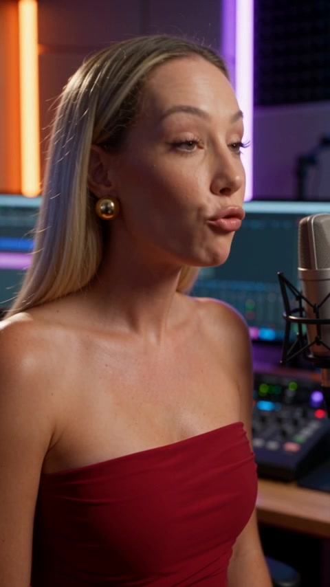

Одна идея.
Разные привычки
смотреть и читать.
Подбирайте подачу под площадку: короткий ролик, последовательность карточек или изображение с текстом. Здесь — форматы и примеры, с которых можно начать.
Выбрать площадкуЛистать.
Смотреть.
Сохранять.
Карусель разворачивает аргумент, пост передаёт наблюдение, Reels помогает объяснить тему голосом. Stories дополняют основную ленту короткими сообщениями.
Мысль, которая
помещается
в короткий ролик.
Начните с ясного тезиса или вопроса. Подача, темп и визуальный образ помогают зрителю быстро понять, о чём вы говорите.
Как создаётся ролик ↗
Экспертная мысль.
В формате Shorts.
Короткое объяснение может стать знакомством с вашим подходом. Выбирайте одну тему, завершайте мысль и связывайте выпуск с другими материалами.
Посмотреть видеопример ↗Выбирайте по смыслу.
Адаптируйте
под площадку.
Разные темы.
Разные авторы.
Разные авторы. Свой характер
Показать, что OWAI помогает разным людям выражать себя, а не повторяет одну и ту же ленту.
Что подготовить +
- Сцена
- Настоящие профили с разрешением на показ: целиком видны аватар, описание и сетка публикаций. У каждого — имя, ниша и короткое пояснение работы OWAI. Цифры и результаты использовать только подтверждённые, без дорисовки.
- Ощущение
- Узнавание своей задачи и доверие через разнообразие примеров.
- Формат
- 4:5. Светлый фон, чёрная типографика, оранжевый акцент OWAI. Мелкий текст интерфейса показывать крупным планом.
Формат выбран.
Осталось опубликовать.
Доступный способ публикации зависит от площадки, типа аккаунта и подключения. Перед планированием проверьте, что нужный формат доступен для вашего аккаунта.